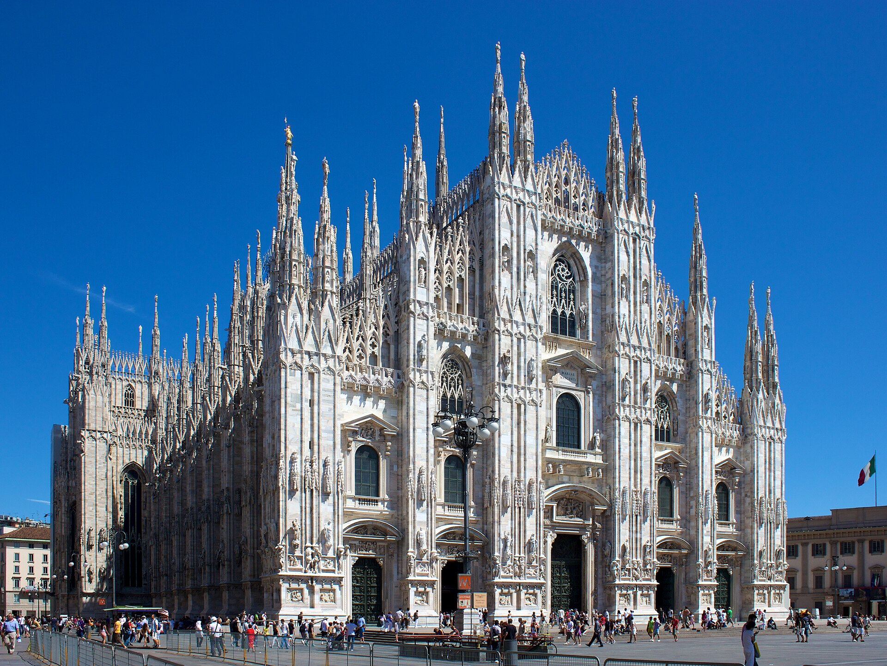

先減箱，比寄行李還便宜
6 人最多 4 顆大箱
大人共 3–4 顆中大型箱＋每人一個登山背包。小孩只背自己的小背包。雪地／石板路，四輪硬殼比兩輪軟箱更難拖。2/9 聖莫里茲那一晚的換洗衣物塞進背包，大箱不要上車。
14-DAY DOSSIER · 2027.01.30 · CET 冬天時區

2027.01.30 出發 · 隆冬雪景 · EVA BR95／BR96 · 含冰河列車
出發日已鎖定 2027 年 1 月 30 日（六）夜航。這是阿爾卑斯的真冬天：少女峰、策馬特、冰河列車都是白雪，不是夏天的綠草地。路線改為台北→米蘭→琉森→少女峰→策馬特→冰河列車到聖莫里茲→伯恩尼納出義大利回米蘭再回台。
1/30 出發＝歐洲冬天時區 CET（台灣 −7 小時）。回程 2/12 米蘭起飛，2/13 清晨到桃園。時刻表全部是當地時間。
答案：瑞士段幾乎全是雪景。米蘭、科莫是灰冷的冬天城市與湖，不是雪國；一進阿爾卑斯就是白的。白天短，約 08:00 天亮、17:15 天黑，行程已按冬日收短。
J 人交通裁決
米蘭有 ZTL 限行與停車地獄；科莫湖精華在船上；琉森／茵特拉肯／策馬特的真正風景在齒軌列車與纜車上，車開不到。策馬特全鎮禁車。瑞士高速公路還要買 vignette。對這條「米蘭進、阿爾卑斯三角、米蘭出」的路線，Swiss Travel Pass 8 日（約 CHF 439／2 等）＋義大利段點對點火車票比較準、比較不累。
點開每一天看景點照片、時刻、租車裁決、飯店抵達。時刻已含緩衝，不要再砍。
機票以外，現在（2026 年 8 月）真正該訂的只有飯店，以及如果你要坐冰河列車尊爵艙。其餘設日曆，開賣再搶。紅色＝不買上不了；深色金框＝建議升級的艙等。
人數已改成 4 大 2 小。六人開三間雙人房通常比 包棟／整套公寓 貴一倍左右，還不能自己做早餐。超豪包棟（策馬特一週 CHF 3 萬起的員工配膳 chalet）不要看，那是另一個預算。
按鈕會用你們的入住日、4 成人 2 小孩打開 Booking 整套房或 Airbnb。 聖莫里茲只住一晚，很多包棟有最短入住，那一晚可以改家庭房。策馬特與茵特拉肯最該包棟。
參考價為 2026-08-24 冬季行情（整套／晚，含典型清潔費攤提）。匯率 CHF 1＝NT$39、EUR 1＝NT$36。小孩假設 6–15 歲（瑞士 Family Card 免費搭車）。
四大兩小、換 5 次住宿、二月雪地——不要帶 6 顆硬殼大箱自己拖。 冰河列車官方也寫：大件請另外寄，車上空間不夠。SBB 一般「車站到車站」是 後天才取得到（CHF 12／件），跟這趟每站只住 1–2 晚對不上，所以重點不是每段都寄，是抓最痛的兩天。
先減箱，比寄行李還便宜
大人共 3–4 顆中大型箱＋每人一個登山背包。小孩只背自己的小背包。雪地／石板路，四輪硬殼比兩輪軟箱更難拖。2/9 聖莫里茲那一晚的換洗衣物塞進背包，大箱不要上車。
最痛的兩天
策馬特禁車、坡、雪。包棟若不是車站門口，最後 300 公尺拖六件行李是災難。冰河列車 8 小時＋15:37 天快黑抵達聖莫里茲，大箱等於跟小孩搶手。2/10 還要換伯恩尼納再進義大利。
SBB 車站寄件要兩天
官方：今天交、後天在目的地車站取，CHF 12／件、最重約 23 kg。茵特拉肯只住兩晚、聖莫里茲只住一晚，寄了人到箱子還沒到。要用就改 Express 當日門到門（前一天中午前訂）或冰河列車合作的當日宅配。
寄不到米蘭市區
SBB 行李寄送限瑞士／列支敦斯登。不能指望從策馬特直接寄到米蘭飯店。飛機行李服務也是對蘇黎世機場，這趟從 MXP 進出用不到。
| 日 | 路段 | 大箱怎麼辦 |
|---|---|---|
| 2/3 | 米蘭 → 琉森 | 箱子跟人上 EuroCity（有行李架）。琉森車站出站叫車去包棟，不要雪地自己拖。 |
| 2/5 | 琉森 → 茵特拉肯 | 跟人上車。Ost 出站短程計程車。這段車站相對好走。 |
| 2/7 | 茵特拉肯 → 策馬特 | 跟人上車到策馬特車站，事先訂電瓶車計程車到包棟。不要「走五分鐘」帶六件箱走雪坡。 |
| 2/9 | 冰河列車 → 聖莫里茲 | 大箱不要上冰河列車。 前一天中午前訂當日門到門（SBB Express 或 Jaisli），從策馬特公寓送到聖莫里茲住處，晚上 18:00 前到。車上只留背包。策馬特是禁車區，Express 有禁車地點加價。 |
| 2/10 | 聖莫里茲 → Tirano → 米蘭 | 大箱跟人走伯恩尼納（行李空間比冰河列車好）。Tirano 換義大利車再叫一次車到 Milano Centrale 包棟。不要寄去米蘭。 |
SBB 車站到車站 CHF 12／件、後天取：sbb.ch station-to-station。當日門到門與冰河列車行李：出發前在 SBB App／glacierexpress.ch 核對。4 顆箱寄一趟當日宅配，通常比在雪地吵架便宜。
以 4 成人＋2 小孩 計算。普通住宿＝每站包一棟／一整套；最高等住宿＝必住飯店開三間。不含購物、不含滑雪板。小孩機票先按成人的 75% 估。
| 類 | 項目 | 普通 | 全部最高等 |
|---|
這不是報價單。機票以長榮官網為準；房價以你點進 Booking 當下為準；冰河列車 Excellence 以 glacierexpress.ch 為準。瑞士餐飲與旺季房價波動可以到 ±30%。
勾選會存在這台瀏覽器。沒勾完就不要出門。
所有景點圖均為 Wikimedia Commons 真實攝影／公有領域作品，不是 AI 生成。完整授權見各圖說明。